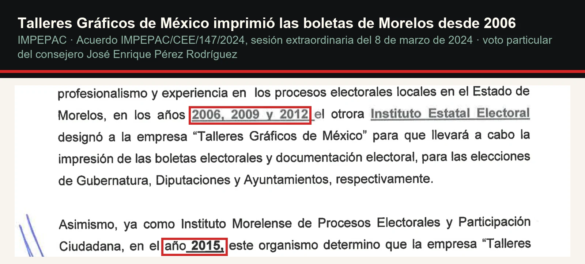
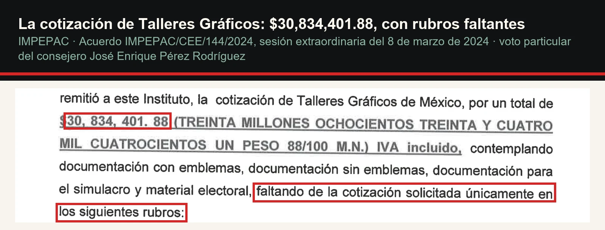
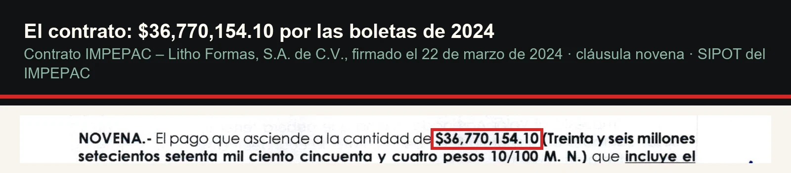
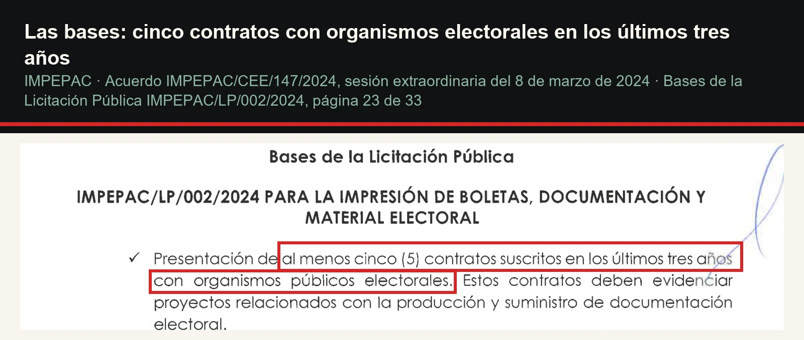
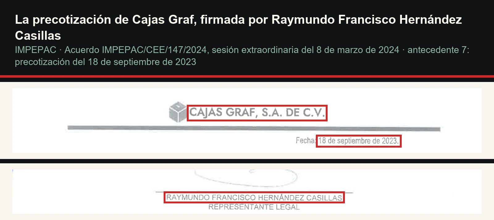
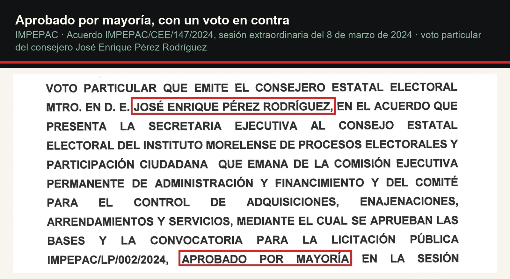

El único que dijo que no
En marzo de 2024 el IMPEPAC dejó a Talleres Gráficos de México, que había impreso las boletas de Morelos en seis elecciones, y licitó con un candado que solo cumplía quien ya era del mercado electoral. Ganó Litho Formas con 36.77 millones. Entre los precios de referencia venía una cotización firmada por Raymundo Francisco Hernández Casillas. Se aprobó por mayoría, con un voto en contra. Hoy la presidenta dice que las siete consejerías consensuaron. Los documentos, con Irving Janis y la ilusión de unanimidad.
El 8 de marzo de 2024, en una sesión extraordinaria del Consejo Estatal Electoral del IMPEPAC, el consejero José Enrique Pérez Rodríguez anunció que, por primera vez en 18 años, no podía acompañar al instituto. Se discutían las bases para licitar la impresión de las boletas de la elección de ese año. "No encuentro una sola motivación o una razón justificada", dijo, "el por qué no Talleres". El acuerdo se aprobó por mayoría, con su voto particular en contra. Dos años y medio después, según la nota que Estrella Pedroza publicó en Proceso el 6 de noviembre de 2026, la presidenta del instituto, Mireya Gally Jordá, sostiene que las siete consejerías consensuaron la licitación y que ella no contrataría "nunca más" a la empresa que la ganó. De los siete, el único que no necesita decir esa frase es el que votó que no.
Seis elecciones y una cotización
Talleres Gráficos de México, la imprenta del Estado, imprimió las boletas de Morelos en 2006, 2009, 2012, 2015, 2018 y 2021. Así lo enumera el voto particular de Pérez en el acuerdo IMPEPAC/CEE/147/2024, que recuerda además que la carta intención enviada a esa imprenta en octubre de 2023 no era vinculante.

El 23 de febrero de 2024, Talleres Gráficos entregó su cotización final por $30,834,401.88 con IVA. No estaba completa: le faltaban siete rubros, entre ellos los tableros con información de candidaturas y los manuales de funcionario, según el voto particular del mismo consejero en el acuerdo IMPEPAC/CEE/144/2024. Ese acuerdo tomó la ampliación de $15,474,692.85 que había otorgado la Secretaría de Hacienda estatal y la sumó completa a la partida de impresiones oficiales, que tenía $21,492,300. El techo quedó en unos $36.97 millones.

El 19 de marzo, el Comité de Adquisiciones falló a favor de Litho Formas por $36,770,154.10, una cifra $196,838 por debajo de ese techo. El contrato se firmó el 22 de marzo de 2024.

El candado
Las bases de la licitación IMPEPAC/LP/002/2024 pedían, para la documentación electoral, al menos cinco contratos firmados en los últimos tres años con organismos públicos electorales, cada uno con su constancia de cumplimiento, y prohibían subcontratar. La consejera Elizabeth Martínez propuso esos candados en la sesión; la consejera Isabel Guadarrama los defendió con una frase que hoy pesa distinto: son empresas conocidas por el INE, "no son empresas que estén brincando ahora a realizar este tipo de documentación y de boletas", ni "que estén experimentando a ver si les sale".

Una mayoría no es un consenso. Es una mayoría con un nombre en contra.
Un requisito así protege al instituto de un improvisado. También deja la puerta abierta solo para quien ya es parte del mercado electoral. En la Plataforma Nacional de Transparencia, con datos que no hemos auditado, cumplían el umbral Litho Formas, Cajas Graf, Corporativo ZEG, Formas Finas, Gráficas Corona y Formas Inteligentes. El candado no estaba cortado a la medida de una sola empresa: estaba cortado a la medida del club.
Los precios de referencia
Antes de licitar, el instituto pidió precotizaciones. El acuerdo 147 integra cuatro, de septiembre de 2023, y tres son de firmas que la prensa ha ligado a los hermanos Hernández Casillas: Cajas Graf, Corporativo ZEG y Litho Formas. La de Cajas Graf, fechada el 18 de septiembre de 2023, la firma como representante legal Raymundo Francisco Hernández Casillas.

Su hermano, José Alfredo, es el proveedor del INE en el centro del escándalo de contratos que antecedió la renuncia de Guadalupe Taddei a la presidencia del instituto, anunciada el 25 de octubre de 2026. El Universal reportó el 4 de noviembre que la Unidad de Inteligencia Financiera congeló cuentas de ambos hermanos, como medida preventiva, y les atribuyó siete empresas, entre ellas Cajas Graf, Corporativo Zeg y Formas Finas. Litho Formas no aparece en esa lista. Tampoco la nombra la nota de Expansión sobre la red que exhibió la Secretaría Anticorrupción el 5 de noviembre. La propia Litho Formas publicó en La Razón, el 29 de octubre, que con los hermanos "no existe vínculo accionario ni corporativo" y que "no existe representación legal".
La ilusión de unanimidad
Irving L. Janis estudió en 1972 cómo grupos competentes toman decisiones malas sin que nadie mienta. Entre los síntomas que describió están la ilusión de unanimidad, la autocensura y la presión sobre quien disiente, que el grupo suele leer como ruido y no como información. El caso del IMPEPAC no prueba que hubiera pensamiento de grupo en 2024, y no lo afirmo. Lo que sí deja ver es la versión retrospectiva del fenómeno: cuando el resultado sale mal, el disenso se borra del recuerdo y la decisión se vuelve de todos.

Según Proceso, la impresión arrancó con retraso, hubo errores que corregir y Litho Formas entregó el material el último día del plazo contractual. La misma nota recoge que el instituto no verificó vínculos societarios ni representantes comunes entre las concursantes, porque, en palabras de Gally, no era su atribución. Frente a eso, la frase de las siete consejerías choca con el papel: el acuerdo se aprobó por mayoría, con un voto particular en contra. Una mayoría no es un consenso. Es una mayoría con un nombre en contra, y ese nombre es lo que la palabra "consensuaron" desaparece.
Lo que corta en contra
Hay razones serias del otro lado, y van completas. La cotización de Talleres Gráficos no cubría todo lo que se pidió, y el representante del PAN, Rubén Peralta, dijo en la sesión que había llegado sin hoja membretada. Martínez explicó que el instituto pidió presupuesto para licitar con más tiempo y no se lo dieron, además de advertir que las precotizaciones de 2023 se hicieron con cantidades y especificaciones distintas, de modo que no se pueden comparar con el precio final. El consejero Javier Arias defendió la licitación como garantía de independencia frente a una empresa del gobierno. Si Litho Formas entregó dentro del plazo, la pena por atraso del contrato, del 1% por día, probablemente no aplicaba. Nada de lo anterior es ilegal ni prueba de un arreglo, y no se trata de decir que la mayoría planeó lo que ocurrió después.
La pregunta es otra, y es de calendario. En junio de 2027 Morelos vuelve a votar. ¿Con qué bases va a comprar el IMPEPAC esas boletas, y quién va a recordar en la sesión que hubo un voto en contra?
- Contrato de prestación de servicios IMPEPAC–Litho Formas, S.A. de C.V., 22 de marzo de 2024 (cláusulas novena y décima segunda), SIPOT del IMPEPAC: repositoriomorelos.mx/sites/default/files/Autonomos/IMPEPAC/2018/Articulo51/LTAIPEM51_FXXVII_A_Resultados_de_procedimientos_de_licitacion_publica_e_invitacion_restringida_realizados/2024Mayo/CONTRATO_LITHO_FORMAS.pdf
- IMPEPAC, Acuerdo IMPEPAC/CEE/144/2024, 8 de marzo de 2024, con voto particular de José Enrique Pérez Rodríguez: old.impepac.mx/wp-content/uploads/2014/11/InfOficial/Acuerdos/2024/03%20Mar/A-144-S-E-08-03-24.pdf
- IMPEPAC, Acuerdo IMPEPAC/CEE/147/2024, 8 de marzo de 2024 (bases de la licitación IMPEPAC/LP/002/2024, precotizaciones de 2023 y voto particular): old.impepac.mx/wp-content/uploads/2014/11/InfOficial/Acuerdos/2024/03%20Mar/A-147-S-E-08-03-24.pdf
- IMPEPAC, Sesión Extraordinaria del Consejo Estatal Electoral, 8 de marzo de 2024, video oficial (01:01:49, 01:05:17, 01:16:45, 01:20:31, 01:29:50, 01:40:16, 01:54:52, 01:58:46): youtube.com/watch?v=0V0AZjmH3Bw
- Estrella Pedroza (CIMAC Noticias), "Recomendado por el INE de Taddei, Hernández Casillas copó licitación millonaria en Morelos", Proceso, 6 de noviembre de 2026: proceso.com.mx/nacional/2026/11/6/recomendado-por-el-ine-de-taddei-hernandez-casillas-copo-licitacion-millonaria-en-morelos-383222.html
- El Universal, "UIF bloquea cuentas de Taddei; también congela 39 cuentas más relacionadas con el INE", 4 de noviembre de 2026: eluniversal.com.mx/nacion/uif-bloquea-cuentas-de-taddei-tambien-congela-39-cuentas-mas-relacionadas-con-el-ine
- El Financiero, "Guadalupe Taddei renuncia como consejera presidenta del INE", 25 de octubre de 2026: elfinanciero.com.mx/nacional/2026/10/25/guadalupe-taddei-renuncia-como-consejera-presidenta-del-ine-que-dijo
- Expansión, "Factureros del INE ganaron contratos por más de 2,646 mdp en 10 años con red de empresas fantasma", 5 de noviembre de 2026: politica.expansion.mx/mexico/2026/11/05/proveedores-ine-empresas-fantasma-2646-mdp
- La Razón, "Carta aclaratoria" de Litho Formas, 29 de octubre de 2026: razon.com.mx/mexico/2026/10/29/carta-aclaratoria
- Plataforma Nacional de Transparencia, Buscador Temático, colección de contratos (consulta del 8 de noviembre de 2026): tematicos.plataformadetransparencia.org.mx
- Irving L. Janis, Victims of Groupthink: A Psychological Study of Foreign-Policy Decisions and Fiascoes, Boston, Houghton Mifflin, 1972.
Las ligas van a la vista para que cualquiera compruebe por su cuenta. Si alguna dejó de resolver, escríbenos y la reponemos.
SRVO